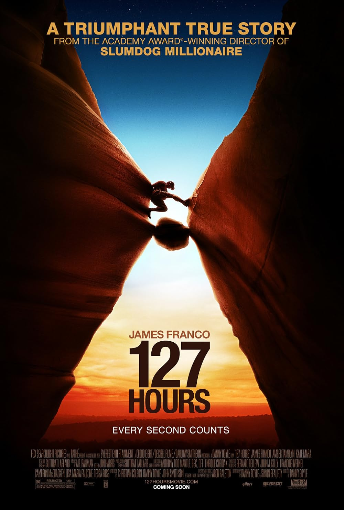

127 Hours
83rd Academy Awards
(Oscars 2011)
6 Nominations, 0 Awards
| Nominations | ||
|---|---|---|
| Category | Nominees | Result |
| Best Picture | Christian Colson [-] Danny Boyle, and John Smithson | Nominated |
| Actor in a Leading Role | James Franco [-] | Nominated |
| Writing (Adapted Screenplay) | Danny Boyle and Simon Beaufoy | Nominated |
| Film Editing | Jon Harris | Nominated |
| Music (Original Score) | A.R. Rahman [-] | Nominated |
| Music (Original Song) "If I Rise" |
A.R. Rahman [-] Dido, and Rollo Armstrong | Nominated |